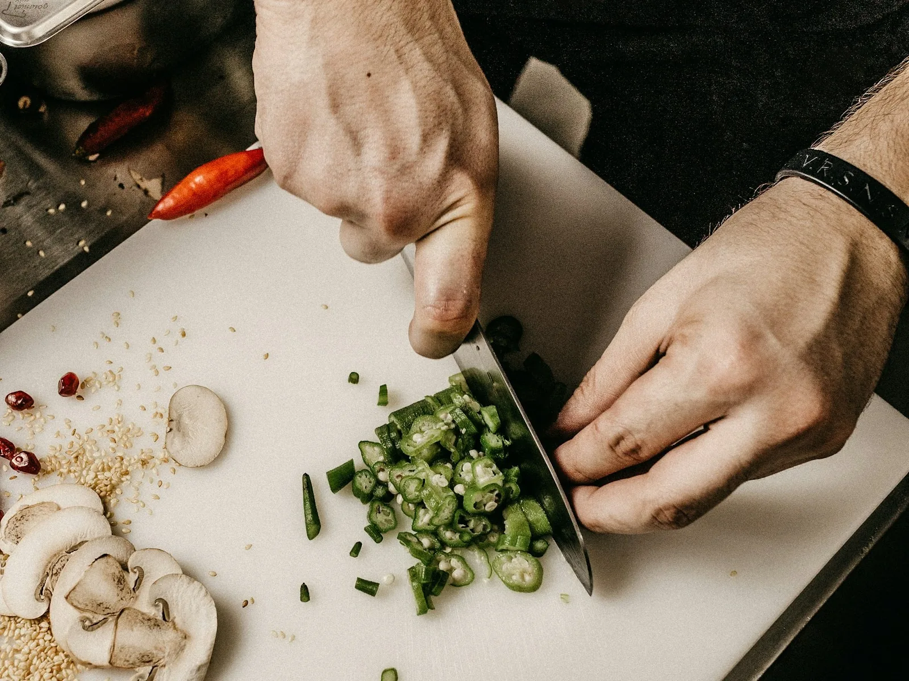
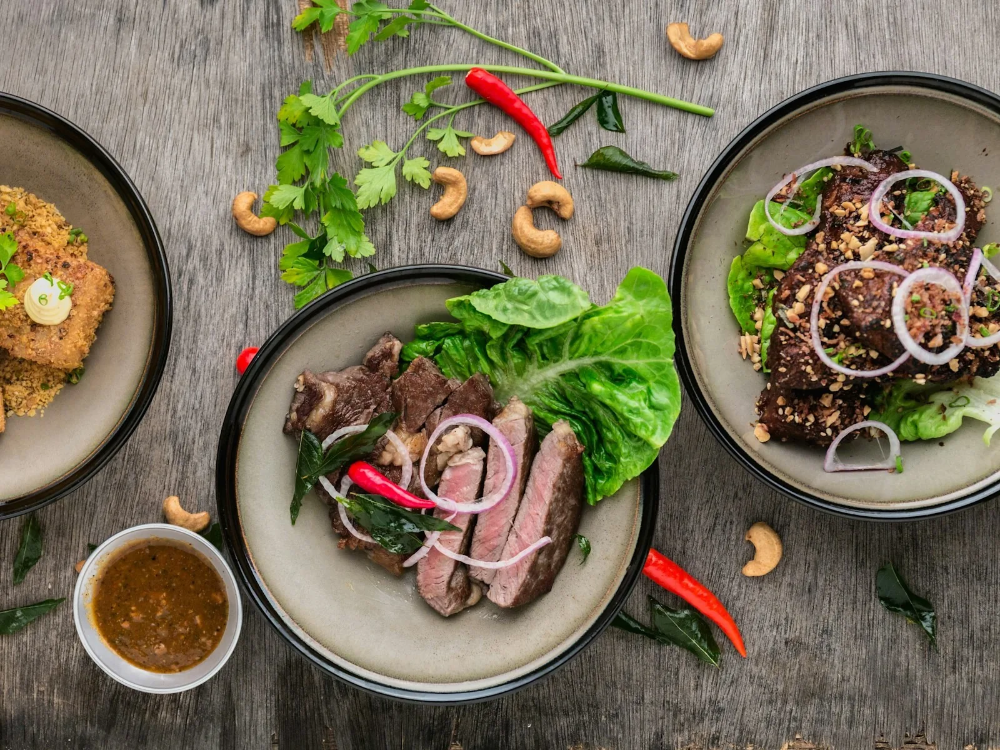

BL
Berry Lift
$8.50Strawberry, blueberry, banana and oat milk.
BLENDED FOR REAL LIFE
Fruit-forward smoothies, protein shakes, bowls, juices, coffee and grab-and-go food built for mornings, workouts and everything after.
MENU
A real café menu organized by what people actually order.
Fruit-forward blends made to order.
10Protein-forward blends for gym-day convenience.
8Thick blends topped with fruit, granola and seeds.
8Fresh-pressed style juices and small shots.
6Cold brew, espresso drinks and matcha.
8Portable breakfast, snacks and light savory options.
8Add-ons for customizing blends and bowls.
POPULAR NOW
Strawberry, blueberry, banana and oat milk.
Spinach, mango, pineapple, banana and coconut water.
Strawberry, banana, oats and oat milk.
Banana, vanilla protein, oat milk and cinnamon.
Mixed berries, vanilla protein, banana and coconut water.
Berry base with banana, berries, granola and chia.
Cucumber, apple, spinach, lemon and ginger.
House cold brew over ice.
Greek yogurt, berries, granola and seeds.
Creamy peanut butter add-on.

FRESH PREP
Fruit, greens, oats, nut butters, yogurt, espresso and toppings are prepped around a fast café workflow designed for made-to-order drinks and portable food.
GYM BAG FRIENDLY
The brand direction connects naturally to fitness without pretending smoothies are medical treatment or making performance claims.
See protein shakesBUILD YOUR ORDER
Smoothie, shake, bowl, juice, coffee or grab-and-go.
Choose milk/base preferences, toppings or boosters where available.
Pre-order for pickup or order at the counter.
BOWLS + BREAKFAST

The menu now has a real second layer beyond drinks, so the business reads like a complete smoothie bar rather than a template.
Browse grab & goCATERING
Designed for offices, gyms, team mornings and small events.
Eight 12 oz bottled smoothies from a selected flavor set.
Overnight oats, fruit cups and coffee for small teams.
On-site or pickup package for gyms and team events.
FAQ
Yes. Most made-to-order blends can be adjusted with available bases, fruit and boosters. Some recipe changes may affect price.
Nutrition values on this prototype are estimates until final recipes and portions are verified.
Shared equipment may contact major allergens. Review the allergen page and speak with staff if you have an allergy.
The prototype includes a demo pre-order builder. Connect it to a real POS/order platform before launch.
READY?